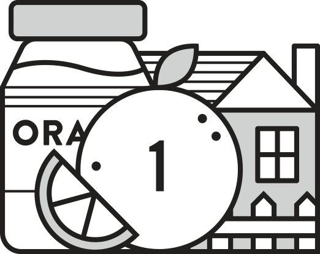
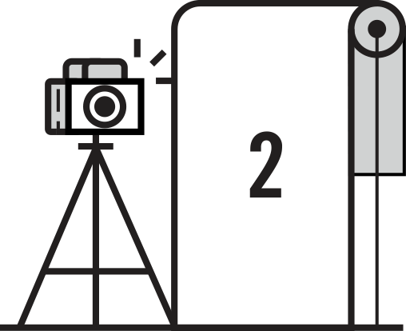
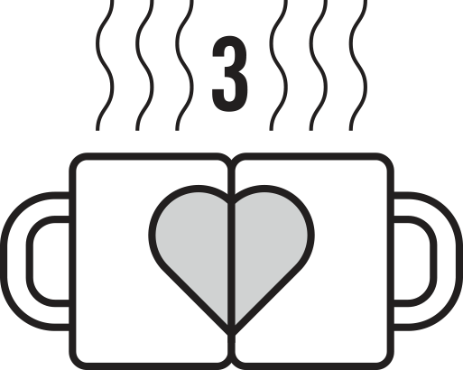
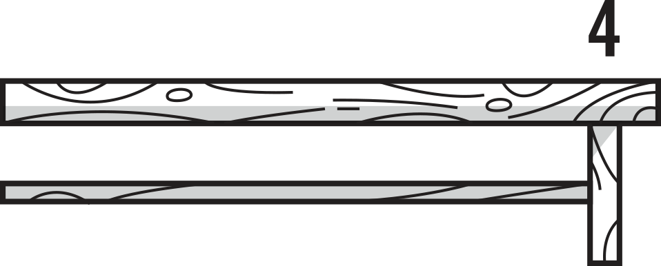
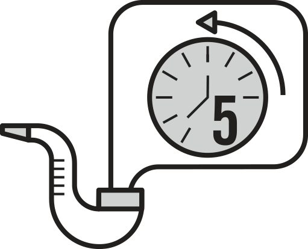
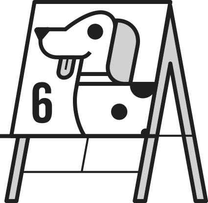
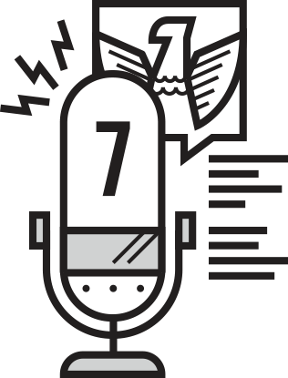
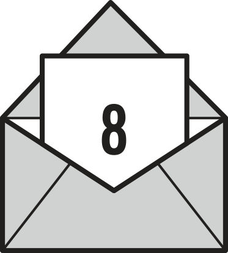

Too often, we are disconnected from the people who are just a stone’s throw away. It was in this spirit that we at GOOD created Neighborday, a new global holiday of local happenings. Last year, thousands of you answered our challenge to strengthen your relationships with those who share your walls and/or fences. As we look toward this year’s event, we’ve decided to offer a few helpful starter ideas on how to celebrate for you newbies out there.
HERE’s how to join in
1. Make hyper-local food...
Like these orange jams by Márcia at Projeto Vizinhança’s Neighborday in São Paulo. The oranges came from her mother’s backyard. Yum.
2. Create a photo op...
like Erin Guido’s event at BuckBuck in Cleveland.
3. Make some swag...
like these Neighborday mugs by Neighbor Agency in Venice, California.
4. Build a communal table...
and invite your neighbor to share in a meal like this one in Durham, North Carolina a half-mile long!
5. Tell people the history of your neighborhood...
like Rigel Thurston’s neighbor, Lonny, in Austin.
6. Set up an arts-and-crafts area
like the one Juli Palomba did in Washington, D.C., which offered dog caricatures for her four-legged neighbors.
7. Go on air...
like the mayor of Atlanta, who used his weekly Sunday address to urge people to get out for Neighborday.
8. Get everyone’s email into a thread...
like Ben Goldhirsh, in Los Angeles. Ben’s list has been used several times, once to find a lost dog named Roxanne.